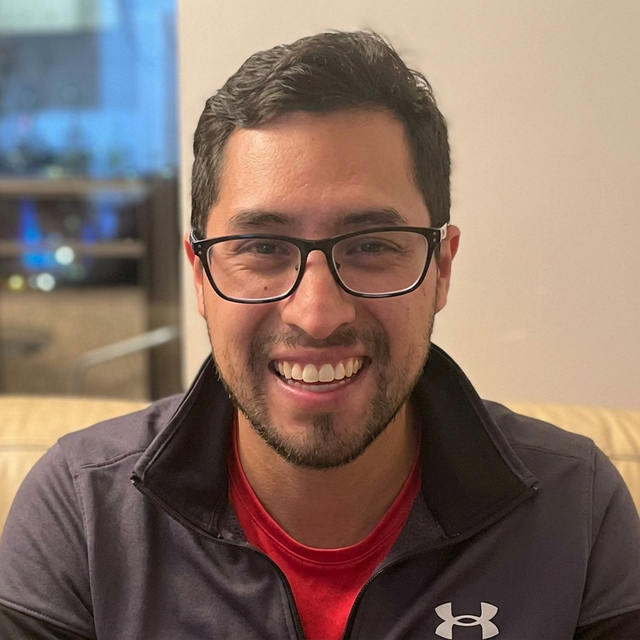
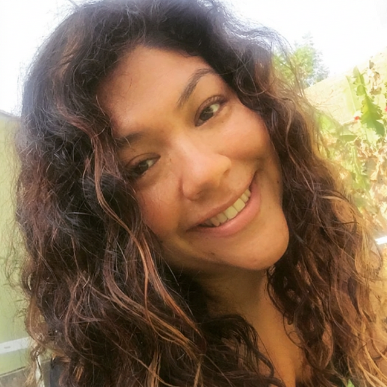
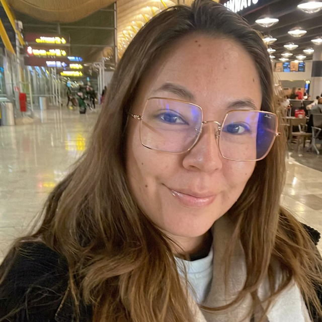
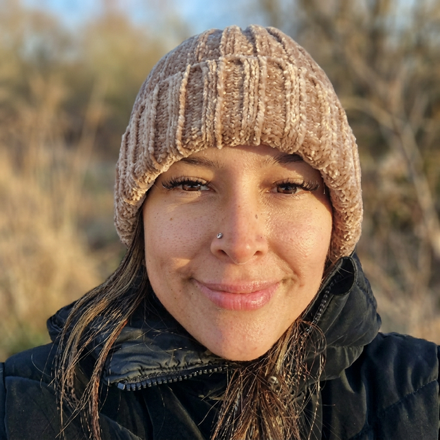
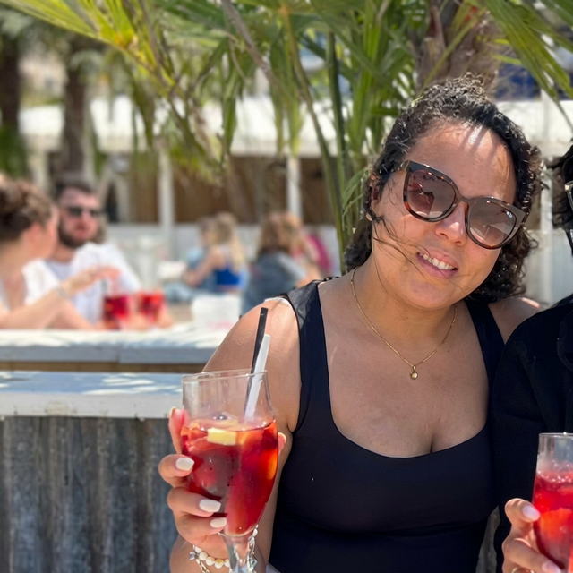
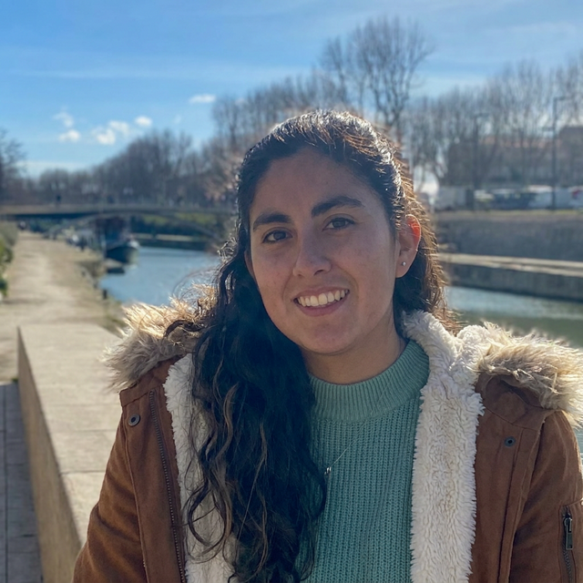

Extended Family
Desde las raices que nos sostienen hasta las ramas que siguen creciendo, la historia de mi familia abarca generaciones.
Las Raices
Sergio Ranilla Ranilla
1901 - Fallecido
Aurora Rondon Perea
Fallecida
Victoriano Cateriano
Fallecido
Agricultor de Majes, Arequipa, que se caso joven y forjo una familia basada en el trabajo duro y el amor a la tierra.
Leer mas →Lucila Dongo Salcedo
Fallecida
Nacio en Ocona y crecio en Majes tras perder a sus padres de joven. Se convirtio en el corazon dedicado de su familia.
Leer mas →Eugenio Astocondor Fuertes
1895 - Fallecido
Carlota Salazar Mateo
1897 - Fallecida
Jose Dalicio Lopez Lopez
1908 - 1990

Maria Carlota Ruiz Guevara
1911 - 2008
Una matriarca cuya fortaleza y gracia guio a la familia por generaciones. La sabiduria y el amor incondicional de Mama Carlota crearon una base que nos sigue sosteniendo.
Leer mas →Los Pilares

Sergio Raul Ranilla
1928 - 2016
Un hombre de honor e integridad cuya presencia inspiraba respeto y admiracion. Su dedicacion a la familia y sus valores siguen guiandonos.
Leer mas →
Maria Jesus Cateriano
1936 - 2023
Una abuela entregada cuyo amor no tenia limites. Su bondad, su fe y su dedicacion a la familia fueron una inspiracion para todos.
Leer mas →
Eugenio Astocondor
1918 - 2000
Un pilar de fortaleza y sabiduria en la familia. Su espiritu tranquilo y su amor inquebrantable marcaron a generaciones.
Leer mas →
Alcira Victoria Lopez
1934 - Vive
Una verdadera matriarca de la familia. Mama Giya ha sido como una madre para mi. Como su primer nieto, he tenido la suerte de crecer con su amor y atencion constante.
Leer mas →Tios y Tias
Eugenio Augusto
Un tio muy querido cuya calidez y bondad llegaba a todos los que lo conocian. Su recuerdo es una bendicion para quienes tuvimos la suerte de compartir con el.
Leer mas →
Maria Alcira del Carmen
Una tia adorada cuyo carino y generosidad la hicieron querida por todos. La recordamos siempre con amor y gratitud.
Leer mas →Primos
Luis Fernando
Primo y parte querida de mi familia.

Fernando Javier
Primo y parte querida de mi familia.
Lorenzo David
Primo y parte querida de mi familia.
Eugenio Jesus
Primo y parte querida de mi familia.
Ernesto
Primo y parte querida de mi familia.

Luisa Cristina
Prima y parte querida de mi familia.

Monica del Carmen
Prima y parte querida de mi familia.

Paola Andrea
Prima y parte querida de mi familia.

Milagros
Prima y parte querida de mi familia.

Adriana
Prima y parte querida de mi familia.
Alessandra
Prima y parte querida de mi familia.
Paola Josefina
Prima y parte querida de mi familia.